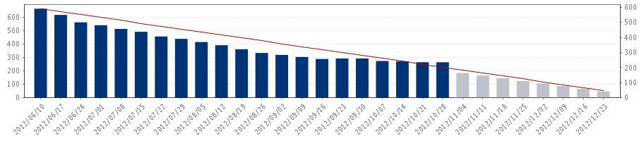

| Avamar Node Available Capacity Linear Forecast Server Group=Global Storage Infrastructure | Dec 09, 2011 12:00:00AM - Dec 07, 2012 05:49:59AM | |
| The variable 'TheArrayName' is not contained in the context map. | |
| Avamar Node Available Capacity Linear Forecast.D | ||||||||||
|  | ||||||||||
|